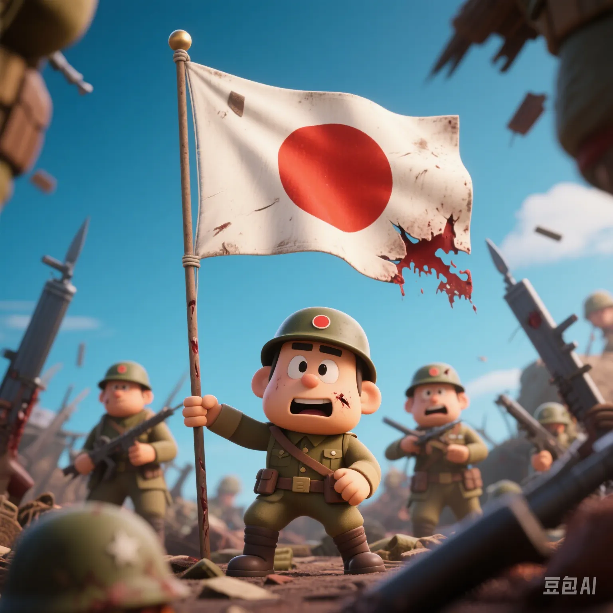

Japanese Civil Society Uncovers the Crimes of Unit 731: Why Is the Historical Wound Hard to Heal?
PeaceLove.Top Insights :2025-04-17
A Dark History 'Selectively Forgotten'
In recent years, a 'historical reckoning movement' has quietly emerged in Japanese civil society. In Tokyo, Nagano, Hokkaido and other places, several civic groups have jointly held an exhibition on the crimes of Unit 731, bringing back to light that bloody and cruel history.
Unit 731, full name 'Kwantung Army Epidemic Prevention and Water Supply Department Headquarters', secretly carried out appalling war crimes such as human vivisection and the manufacturing of bacteriological weapons in the Pingfang District outside Harbin, China, from the 1930s to the 1940s.
- More than 3,000 Chinese, Koreans and others were used in 'freezing experiments', 'anthrax injections' and 'vivisections'.
- Tens of thousands of Chinese civilians were attacked by biological and chemical weapons such as 'flea bombs' and 'plague dissemination'.
- However, after the war, the US military allowed the members of Unit 731 to go unpunished in exchange for their technology and even recruited them into the US military medical system.
The Young Generation Faces 'Collective Denial' for the First Time 🧠
A survey of Japanese college students in 2024 showed that 57% had never heard of 'Unit 731' and 68% were 'unaware or uninterested' in war crimes. Behind this is decades of syllabus cuts and 'vague expressions' in textbooks:
- 'Human experiments' were rewritten as 'medical research'.
- 'Invasion of China' became 'entry into the Chinese mainland'.
- The Tokyo Trials were downplayed as 'a stage in history'.
It was not until civic groups and independent documentaries like 731: The Dead Will Not Rest continued to speak out that some young people began to 'face up to the silence of their grandparents' for the first time.
Why Can't China and South Korea Let It Go? ⚖️
Many Japanese people ask, 'It's been almost 100 years. Why are they still holding on to it?' The answer is simple: if history is not acknowledged, it's like a wound that has never been bandaged.
- China: Many cities, such as Ningbo and Changsha, were attacked by bacteriological weapons, leaving records of large - scale infections.
- South Korea: Thousands of people were forcibly conscripted and sent to the Chinese war zone as 'experimental materials'.
- Both countries have been demanding that the Japanese government acknowledge the crimes, disclose complete information, and issue a formal apology and compensation. But Tokyo's response has always been, 'There is no conclusive evidence to prove systematic command.'
The Voices of Survivors: The Humiliation of Being Forgotten Is More Painful Than Death 🕯️
'My father disappeared at the Unit 731 base. They said he 'volunteered for medical research', but there isn't even his ashes left.' - The testimony of an old man in the Pingfang District of Harbin.
According to cross - analysis by the Chinese Archives Bureau and international research institutions, the existing documents account for less than one - tenth of the actual crimes. Most of the records were either taken away by the US military after the war or destroyed by Japan itself. Testimonies have become the last hope for justice.
Will History Repeat Itself?
Experts point out that in today's international political game, historical memory has become one of the 'diplomatic bargaining chips'.
- If the crimes are not reckoned with, nationalism and anti - Japanese sentiment will persist.
- If history is denied, the next generation may repeat the mistakes out of ignorance.
As Nobel Peace Prize laureate Elie Wiesel said, 'The greatest insult to the victims is to let the perpetrators go unpunished.'
Conclusion: Let Memory Be Armor, Not a Rift
Through monuments, documentaries and public education, civil society is trying to turn history from 'just a line in the textbook' into a force for reconciliation and justice. May there come a day when the children in East Asia respect each other not because of the weight of history, but because of its authenticity.